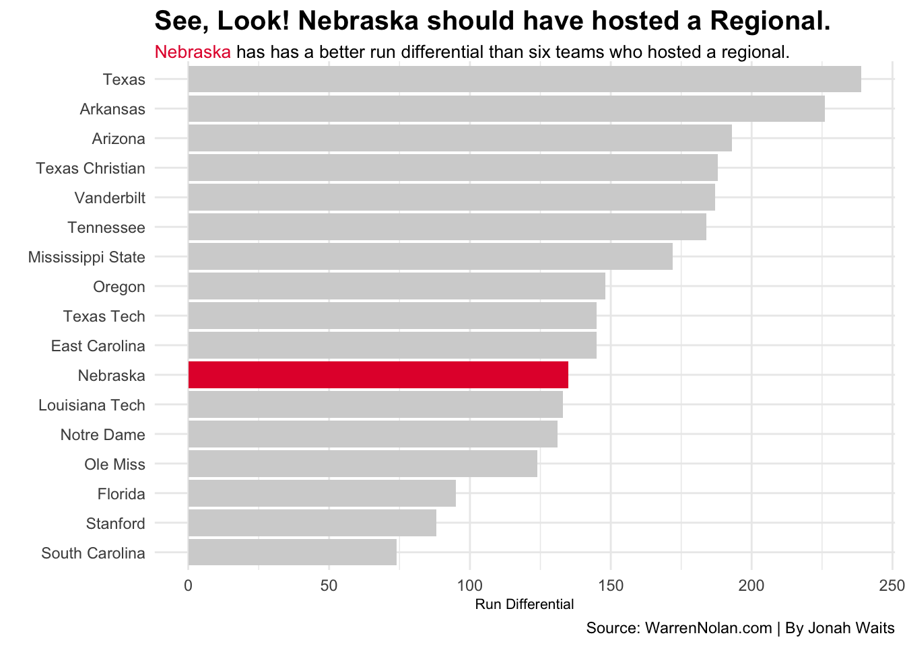
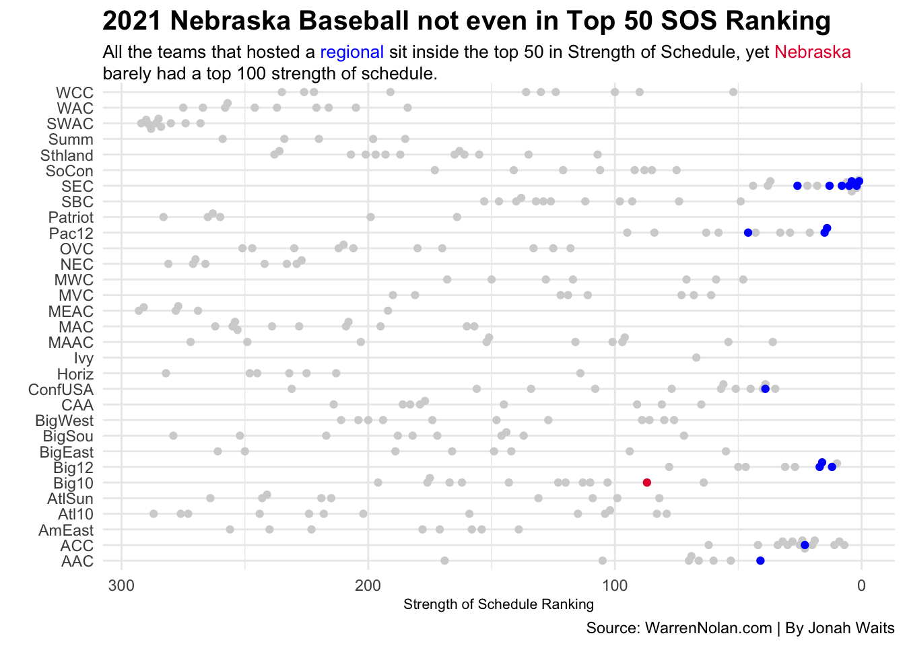
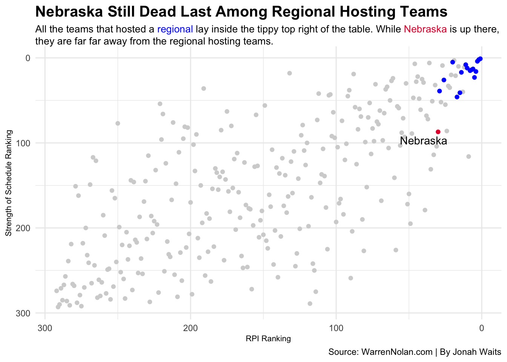

2021 Nebraska Baseball Did Not Deserve to Host a Regional
baseball
Nebraska
Cornhuskers
Author
Jonah Waits
Published
April 14, 2024
Three years ago, the Nebraska Huskers baseball team traveled to Fayetteville, Arkansas and lost to the #1 Razorbacks in the Fayetteville regional.
This team was supposedly the best Huskers team since 2005 when Alex Gordon won the Golden Spikes Award; an annual award given to the best college baseball player in the nation.
So, for at least three years now, Nebraska Cornhuskers fans have screamed up and down that their 2021 Nebraska baseball team should have hosted a regional.
Lets find out if that’s true.
Hint: If you’re a Huskers fan, you might not like the answer.
Using the RPI (Rating Percentage Index) created by Jim Wright and the NCAA, and the Strength of Schedule (SOS) number from WarrenNolan.com, originally from the NCAA, will help get down to the bottom of it.
Before, we look at the complicated stuff, let’s look at something easy, run differential:
Code
library(tidyverse)library(ggrepel)library(ggbeeswarm)library(ggalt)library(ggtext)library(gt)baseball <-read_csv("baseball2021.csv") |>mutate(SOS =as.numeric(SOS)) |>mutate(RPI =as.numeric(RPI)) table <-read_csv("baseballtable.csv")rteam <-c("Arkansas", "Mississippi State", "Vanderbilt", "South Carolina", "Ole Miss", " Louisiana Tech", "Texas Christian", "Tennessee", "Stanford", "Arizona", "Texas", "Texas Tech", "Notre Dame", "Florida", "East Carolina", "Oregon", "Nebraska", "Louisiana Tech")regionals <- baseball |>filter(regionals =="yes")nu <- baseball |>filter(team =="Nebraska")regionalnu <- baseball |>filter(team %in% rteam)ggplot() +geom_bar(data=regionalnu, aes(x=reorder(team, diff), weight=diff), fill="lightgrey") +geom_bar(data=nu, aes(x=reorder(team, diff), weight=diff), fill="#E41C38") +theme_minimal() +coord_flip() +labs(title="See, Look! Nebraska should have hosted a Regional.", subtitle ="<span style = 'color:#E41C38;'>Nebraska</span> has has a better run differential than six teams who hosted a regional.",x="",y="Run Differential",caption ="Source: WarrenNolan.com | By Jonah Waits" ) +theme_minimal() +theme(plot.subtitle =element_textbox_simple(size =10),plot.title =element_text(size =15, face ="bold"),axis.title =element_text(size =8) )

Among the 17 teams that we’re comparing (The Huskers and all regional hosting teams), Nebraska is better than six of those teams.
Doesn’t that prove right there that they should have hosted over a team like, say, South Carolina, who had the worst run differential?
No.
And here’s why:
Some teams faced harder competition than others.
Some teams, CoughCough Nebraska, didn’t face very good competition.
Code
ggplot() +geom_beeswarm(data=baseball, aes(x=SOS, y=conference), color="lightgrey") +geom_beeswarm(data=regionals, aes(x=SOS, y=conference), color="blue") +geom_beeswarm(data=nu, aes(x=SOS, y=conference), color="#E41C38") +scale_x_reverse() +labs(title ="2021 Nebraska Baseball not even in Top 50 SOS Ranking",x ="Strength of Schedule Ranking", y ="", subtitle ="All the teams that hosted a <span style = 'color:blue;'>regional</span> sit inside the top 50 in Strength of Schedule, yet <span style = 'color:#E41C38;'>Nebraska</span> barely had a top 100 strength of schedule.",caption ="Source: WarrenNolan.com | By Jonah Waits" ) +theme_minimal() +theme(plot.subtitle =element_textbox_simple(size =10),plot.title =element_text(size =15, face ="bold"),axis.title =element_text(size =8) )

Clear as day.
Of the 16 teams that hosted a regional, the Oregon Ducks had the worst Strength of Schedule ranking at 46th.
Nebraska’s Strength of Schedule ranking among all college baseball teams was 87th. 86 teams in the country had a harder schedule than the Huskers.
Still think they should have hosted?
Let’s take it a step further. Let’s look at quad 1 wins.
But first, what are Quad 1 wins?
To answer that, we must first understand what RPI is.
So, imagine you have a big ol’ group of friends, and you want to know which friend is the best. You decide to make a list and put your friends in order from best to not so good friend.
In college baseball, the RPI is kind of like that list for teams. It helps people see how good a baseball team is compared to other teams. The RPI looks at a few things like how many games a team has won, who they’ve played against, and where they played.
So, if a team has a high RPI, it means they’re doing really well. But if their RPI is low, they might not be doing so great. It’s just a way to help figure out which teams are the strongest.
Quad 1 teams are teams that sit in the Top 25 in RPI, hence, Quad 1 wins are wins against those Top 25 teams.
Code
table |>arrange(desc(quad_1_wins)) |>gt() |>cols_label(conf_ranl ="Conference Rank",quad_1_wins ="Quad 1 Wins" ) |>tab_header(title ="Regionals? You Have To Beat Good Teams",subtitle ="Among Teams that Hosted a Regional, Nebraska ranks dead last in Quad 1 wins." ) |>tab_source_note(source_note =md("**By:** Jonah Waits | **Source:** WarrenNolan.com") ) |>tab_style(style =cell_text(color ="black", weight ="bold", align ="left"),locations =cells_title("title") ) |>tab_style(style =cell_text(color ="black", align ="left"),locations =cells_title("subtitle") ) |>tab_style(locations =cells_column_labels(columns =everything()),style =list(cell_borders(sides ="bottom", weight =px(3)),cell_text(weight ="bold", size=12) ) ) |>opt_row_striping() |>opt_table_lines("none") |>tab_style(style =list(cell_fill(color ="#E41C38"),cell_text(color ="white") ),locations =cells_body(rows = Team =="Nebraska") )
Regionals? You Have To Beat Good Teams
Among Teams that Hosted a Regional, Nebraska ranks dead last in Quad 1 wins.
Team
Conference
Quad 1 Wins
Conference Rank
Arkansas
SEC
30
1
Vanderbilt
SEC
27
2
Tennessee
SEC
23
1
Mississippi State
SEC
22
2
Ole Miss
SEC
22
3
Stanford
Pac-12
18
3
Notre Dame
ACC
18
1
Texas
Big 12
17
1
Oregon
Pac-12
17
2
Arizona
Pac-12
16
1
Texas Tech
Big 12
16
3
Texas Christian
Big 12
15
2
South Carolina
SEC
12
4
Florida
SEC
11
3
Louisiana Tech
CUSA
10
1
East Carolina
AAC
7
1
Nebraska
Big Ten
2
1
By: Jonah Waits | Source: WarrenNolan.com
That’s busted your bubble a little bit, hasn’t it?
The Huskers are dead last in quad 1 wins with two. That means that all season long, Nebraska won just two games against teams that were considered great. Every team that received the privilege of hosting a regional in their city had at least seven. All of them proved at least seven times that they were great. Nebraska didn’t do that.
Now, if some you classically delusional Huskers fans are still here and still holding out hope; don’t.
Not only was Nebraska dead last in Strength of Schedule compared to all regional hosting teams, it was also dead last in RPI.
Code
ggplot() +geom_point(data=baseball, aes(x=RPI, y=SOS), color="lightgrey") +geom_point(data=regionals, aes(x=RPI, y=SOS), color="blue") +geom_point(data=nu, aes(x=RPI, y=SOS), color="#E41C38") +geom_text_repel(data=nu, aes(x=RPI, y=SOS, label=team)) +scale_x_reverse() +scale_y_reverse() +theme_minimal() +labs(title ="Nebraska Still Dead Last Among Regional Hosting Teams",x ="RPI Ranking",y="Strength of Schedule Ranking", caption="Source: WarrenNolan.com | By Jonah Waits",subtitle ="All the teams that hosted a <span style = 'color:blue;'>regional</span> lay inside the tippy top right of the table. While <span style = 'color:#E41C38;'>Nebraska</span> is up there, they are far far away from the regional hosting teams." ) +theme(plot.subtitle =element_textbox_simple(size =10),plot.title =element_text(size =15, face ="bold"),axis.title =element_text(size =8) )

What does this prove?
It proves that Nebraska was better than most teams in the country. But it also proves that all the teams that hosted a regional had a better RPI ranking (They were better against harder teams) and had a better Strength of Schedule (they played harder teams).
In fact, all this chart proves is that there were some teams, not Nebraska, that were snubbed. Look at all that grey amongst all that blue.
Put all these charts together, and what do you get. Proof that Nebraska was destined to go into Fayetteville, Arkansas and lose to the best team in the country, the Arkansas Razorbacks, in their regional.
The 2021 Nebraska baseball team was not snubbed, they were properly left out.